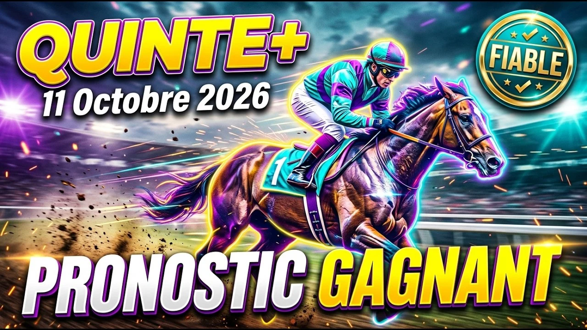

Dimanche à Auteuil, un peu après quinze heures, un steeple-chase de Groupe III. Pas de course de vitesse : ici, la première question est simple, et tout le reste en découle. Qui va sauter juste jusqu'au bout ?
Prix Montgomery, Groupe III : c'est un handicap sur 4700 mètres, gazon, corde à gauche, 152 000 euros, seize chevaux de 5 ans et plus. La course est la troisième épreuve de la réunion 1, dimanche 11 octobre 2026. Le terrain est annoncé très souple, autour de 4,1 selon France Galop.
Les poids vont de 62 à 71,5 kilos, soit près de dix kilos d'écart, et sur une telle distance, ça se sent. Sur un sol lourd, l'expérience pèse lourd, et une faute au rail ditch and fence peut tout gâcher.
La presse a tranché : neuf sources, et deux noms cités par toutes, Pascard de Beausse et Kalibre. Pascard domine le classement pondéré avec 110 points, Kalibre suit avec 94. Ma sélection reprend l'essentiel de ces noms, réordonnés selon ma lecture de la course et ma préférence pour les chevaux légers sur un terrain très souple.
Pourtant, je mets le 15, Kalibre, en tête. Hongre de 6 ans, il ne porte que 62 kilos. Seror l'entraîne, Joël Phelippe le monte. L'an dernier, dans ce même prix, il a fait tomber son jockey au rail ditch and fence alors qu'il était bien placé.
Cette année, il a fini deuxième à Clairefontaine-Deauville le 26 août, puis deuxième du Prix Violon II le 17 septembre, derrière Pascard. Il a gagné 213 075 euros. Pascard l'a battu, c'est vrai, mais je veux croire à la revanche.
Le 2, Pascard de Beausse, est pourtant le cheval à battre sur le papier. Il n'a couru que six fois, pour quatre victoires, deux en haies et deux en steeple. Gabriel Masure le monte, il a gagné le Prix Violon II et il a la meilleure référence récente.
S'il n'est que quatrième dans mon ordre, c'est que je me méfie d'un cheval aussi jeune sur un terrain lourd.
Le 1, Le Petit Cheval, porte 71,5 kilos, le maximum, avec Baptiste Le Clerc. Il a plus de 318 000 euros, deux victoires et une deuxième place au printemps, puis un échec plus récent. Je ne sais pas s'il pourra porter autant sur ce terrain, mais ses références sont les plus solides du lot.
Le 16, Master Nonantais, a 8 ans, 271 000 euros, des œillères australiennes, et il est souvent placé, rarement fautif. Arthur Duvacher le monte.
Le 14, Tante Zena (Seror, Philipperon), ne porte que 62 kilos. Elle est régulière et huit sources sur neuf la retiennent.
Le 6, Johnny Roque (Mele, Johnny Charron), a 243 000 euros, il a gagné sur les haies et sur le steeple, et la presse le cite huit fois sur neuf.
Le 8, Illaho (George, James Reveley), a fini deuxième du Prix du Président de la République en avril sur ce parcours, puis dixième dans le Prix Violon II, qui lui servait de remise en jambes.
Le 3, Amy du Kiff, est le plus riche du lot, 557 000 euros, avec Théo Chevillard, mais sa forme est irrégulière.
Derrière, le lot reste ouvert : Quel Patron, quatrième du Groupe II Prix des Drags en mai ; Lebrio des Mottes, vainqueur en haies le 27 juin ; Caligramme, gagnant du Prix Violon II en 2025 et de retour après six mois d'absence ; Lumino Bello, Pickland, Benou, Kucharsky et Ginja des Taillons. Autant de profils capables d'accrocher une place si la course se décante tôt.
Le rythme sera soutenu, et le steeple pardonne rarement les pronostics trop sûrs. Je préfère Kalibre, mais Pascard est plus fort sur le papier.
Rappel avant de partir : coup d'envoi vers 15h15 pour la troisième épreuve, piste d'Auteuil, 4700 mètres sur le gazon, corde à gauche.
PRONOSTIC : 15 - 1 - 16 - 2 - 14 - 6 - 8 - 3
Regardez l'analyse complète sur YouTube :
▶️ Pronostic Quinté Auteuil 11 octobre
Bonne chance sur vos combinaisons, et à bientôt pour la suite des courses.